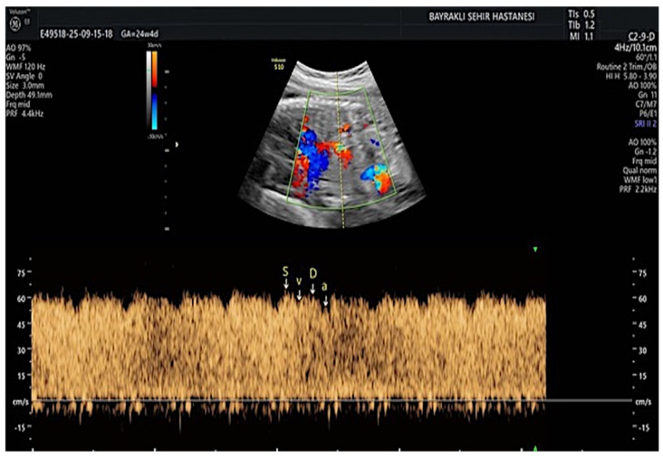
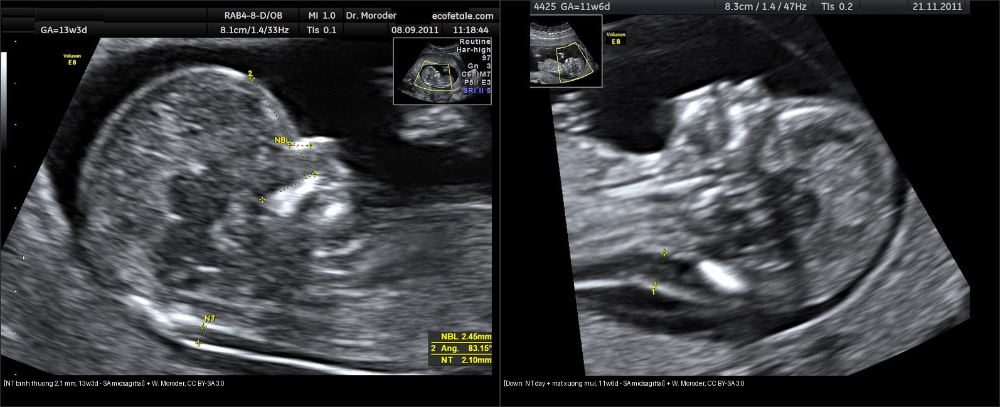
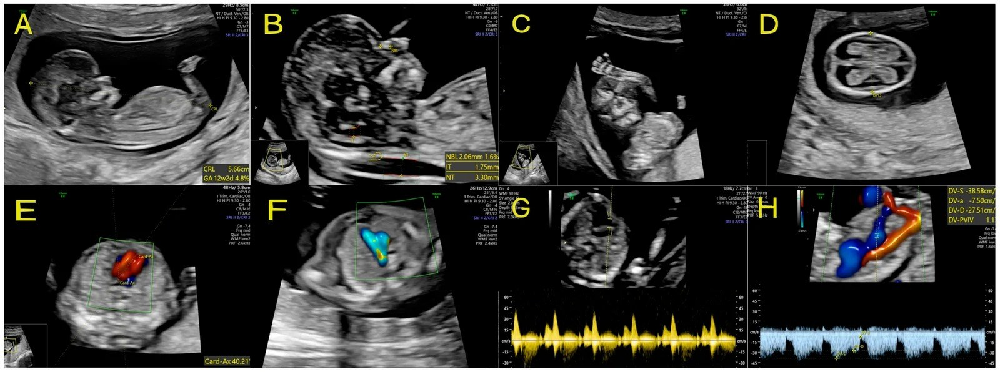
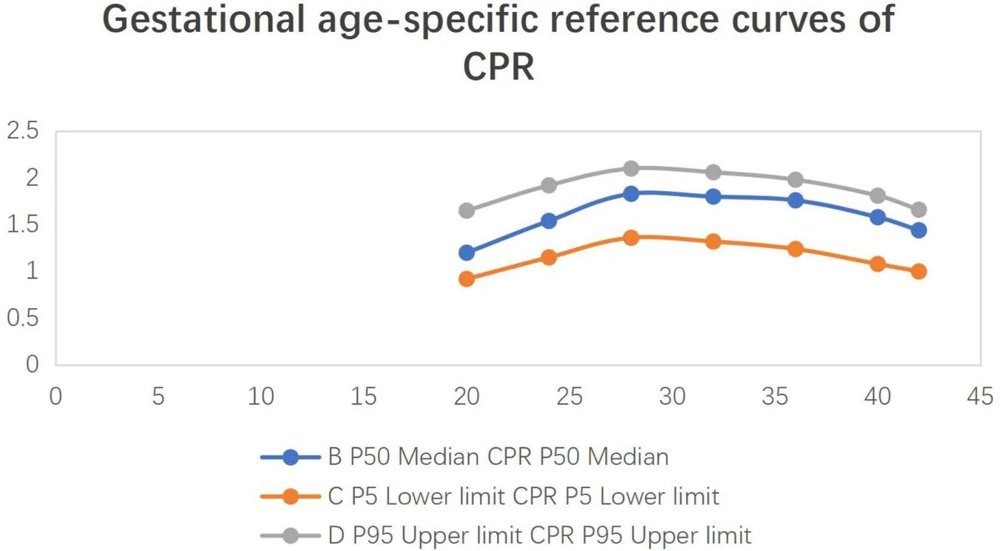
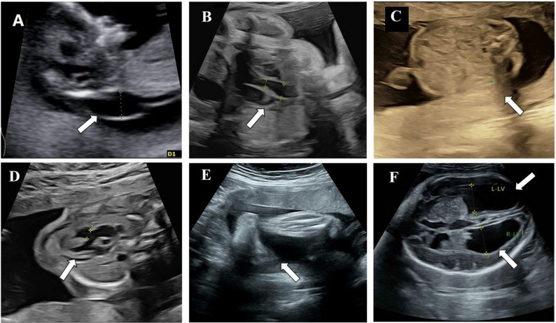
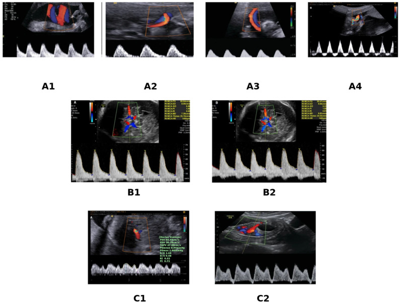
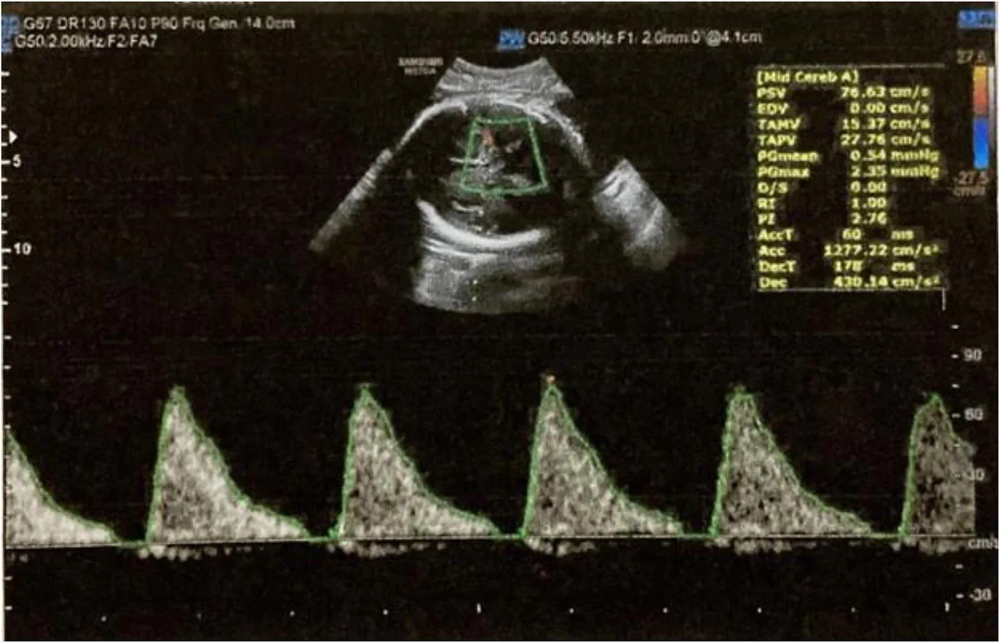

565 — Sàng lọc hình thái thai nhi quý I–II & Doppler sản khoa / Fetal morphology screening & obstetric Doppler
Tags: pattern:hinh-thai pattern:doppler-san-khoa vung:thai-nhi score:Delphi-FGR protocol:SA-hinh-thai protocol:Doppler-san-khoa
Mức chắc chắn (certainty): tổng hợp y văn (literature synthesis) — nhóm tự biên từ các bài tổng quan/ca nguyên văn mở (CC BY) đã kiểm chứng; không phải ca nguyên văn đơn lẻ của nhóm.
1. Tổng quan — vật lý Doppler & cơ chế tích tụ dịch sau gáy (giải thích TẠI SAO)
1a. Vì sao sóng Doppler "nói" được tình trạng tuần hoàn thai
- Siêu âm Doppler đo độ lệch tần số (Doppler shift) do hồng cầu chuyển động; vận tốc đo được tỷ lệ với cos θ nên **góc insonation lý tưởng < 30°** (góc > 60° làm sai số vận tốc > 50%). Vì vậy mọi phép đo phải chỉnh cửa sổ/góc, không đọc vận tốc tuyệt đối khi góc xấu.
- Chỉ số không phụ thuộc góc mới dùng để so sánh: PI = (PSV − EDV)/TAMV (pulsatility index), RI = (PSV − EDV)/PSV (resistance index), S/D. PI/RI tăng khi trở kháng ngoại vi tăng (mất dần dòng cuối tâm trương); mất dòng cuối tâm trương (AEDF, absent end-diastolic flow) rồi đảo dòng (REDF, reversed end-diastolic flow) là bậc thang nặng dần.
- Động mạch rốn (UA, umbilical artery): phản ánh trở kháng bánh nhau. Bánh nhau xơ hóa (suy bánh nhau) → tăng trở kháng → UA PI tăng → AEDF → REDF. Đây là bậc thang tổn thương bánh nhau, không phải bệnh riêng của dây rốn.
- Động mạch não giữa (MCA, middle cerebral artery): khi thiếu oxy, thai giãn mạch não để bảo vệ não (brain-sparing / dấu hiệu trung tâm hóa tuần hoàn) → MCA PI GIẢM trong khi UA PI tăng. Vì MCA-PI và UA-PI biến đổi ngược chiều, tỉ số CPR = MCA-PI/UA-PI nhạy hơn từng chỉ số đơn lẻ.
- Ống tĩnh mạch (DV, ductus venosus): dòng 3 pha tâm thu (S), tâm trương (D) và pha nhĩ (a) — pha a phản ánh dòng khi nhĩ phải co. Suy tim thai → tăng áp lực cuối tâm trương nhĩ phải → mất / đảo sóng a = dấu hiệu toan máu/tim suy, xuất hiện sau khi đã có bất thường động mạch.

Phổ Doppler ống tĩnh mạch bình thường: 3 đỉnh tâm thu (S), tâm trương (D) và pha nhĩ (a) — mất/đảo sóng a là dấu hiệu suy tim thai/toan máu. Nguồn: Diagnostics, CC BY 4.0 (PMC13205511).- MCA-PSV (peak systolic velocity): thiếu máu làm giảm độ nhớt máu + giãn mạch não → vận tốc đỉnh TĂNG. Ngưỡng kinh điển (Mari): MCA-PSV > 1,5 MoM (multiples of median) = thiếu máu trung bình–nặng → chỉ định chọc ối/truyền máu trong tử cung.
- Vì sao tăng khoảng sáng sau gáy (NT, nuchal translucency): NT là lớp dịch dưới da vùng cổ, tích tụ do rối loạn dẫn lưu bạch mạch vùng cổ và/hoặc suy tim thai và/hoặc thay đổi chất nền ngoại bào (extracellular matrix). Vì cùng một cơ chế "ứ dịch" có thể do thể nhiễm sắc thể, tim bẩm sinh, hội chứng đơn gen, nhiễm trùng bào thai, loạn sản xương — nên NT dày là dấu hiệu không đặc hiệu đòi hỏi sàng lọc tiếp, không phải chẩn đoán.
1b. Ngưỡng định lượng bắt buộc (số + phiên bản)
- Cửa sổ đo NT: thai 11+0 đến 13+6 tuần, CRL 45–84 mm (mặt cắt dọc giữa trung tính). "NT tăng" thường định nghĩa > bách phân vị 95 hoặc ≥ 3,5 mm. Với NT 3,0–3,4 mm, gộp 17 nghiên cứu (7.007 thai): bất thường nhiễm sắc thể 13,1% (T21 8,0%, T18 1,0%, T13 0,52%); NT ≥ 5,5 mm → kết cục bất lợi 83,7%.
- Hội chứng Down (T21) trên pha 3 tháng đầu: kết hợp NT + free β-hCG + PAPP-A (combined test, 11–13+6 tuần). Tăng NT (euploid) làm tăng nguy cơ bất thường hệ thần kinh trung ương: gộp 1,16%, OR 3,22.
- FGR (đồng thuận Delphi 2016): chẩn đoán khi EFW hoặc AC < bách phân vị 3, HOẶC < bách phân vị 10 kèm Doppler bất thường** (thường UA PI **> bách phân vị 95). Khởi phát sớm < 32 tuần gắn suy bánh nhau/tiền sản giật; khởi phát muộn ≥ 32 tuần ít liên quan tiền sản giật, thường bộc lộ qua CPR.
- CPR: bất thường khi < bách phân vị 5 (Delphi 2017) hoặc dùng ngưỡng cố định < 1,0 / < 1,08. CPR thấp cho độ nhạy 78,5%, độ đặc hiệu 82,1% dự đoán suy thai trong chuyển dạ, OR điều chỉnh 6,82 cho biến cố chu sinh. Giá trị tham chiếu 40 tuần: UA-PI 0,87, MCA-PI 1,32, CPR 1,58 (MCA-PI đỉnh lúc 28–32 tuần).
- Nguy cơ tử vong thai theo Doppler (gộp): UA mất dòng OR 3,59; UA đảo dòng OR 7,27; DV mất/đảo sóng a OR 11,6. Với DV bất thường, nguy cơ tử vong thai vượt nguy cơ non tháng từ 28 tuần; với UA REDF, từ 30 tuần; với UA AEDF, từ 33–34 tuần.
- MCA-PSV: > 1,5 MoM = thiếu máu trung bình–nặng (Mari). Ca minh họa: MCA-PSV 76,6 cm/s ≈ 1,69 MoM.
2. Mẫu hình + chẩn đoán phân biệt theo vị trí (gamut)
2a. Quý I (11–13+6 tuần): NT tăng / hình thái sớm
- Bất thường nhiễm sắc thể: T21 (NT dày + mất xương mũi + dòng chảy ống tĩnh mạch/van ba lá bất thường), T18/T13 (NT rất dày + tim/tay + thoát vị rốn), Turner 45,X (NT dày ± nang bạch huyết vùng cổ — cystic hygroma + hẹp eo động mạch chủ + thận móng ngựa).
- Tim bẩm sinh (kể cả khi NST bình thường): NT dày có thể là biểu hiện sớm duy nhất.
- Hội chứng đơn gen / loạn sản xương / rối loạn chuyển hóa: NT tăng đơn độc, NST bình thường.
- Nhiễm trùng bào thai (parvovirus B19, CMV) — thường kèm phù thai, tràn dịch.
- Sàng lọc quý I mở rộng còn phát hiện dị tật hình thái chính ngay từ quý I (~3,4% trong một dân số không chọn lọc, theo ISUOG/FMF).
2b. Quý II (18–22 tuần): khảo sát hình thái hệ cơ quan
- Bất thường não/hộp sọ, mặt - cổ, ngực - tim, bụng - thành bụng, cột sống, chi, sinh dục - tiết niệu; đo sinh trắc BPD, HC, AC, FL để so bách phân vị.
- Đây là thời điểm chốt phần lớn dị tật cấu trúc mà quý I bỏ sót.
2c. Doppler — gamut theo chỉ số bất thường
- UA PI tăng / AEDF / REDF → suy bánh nhau (FGR, tiền sản giật, đái tháo đường nặng, thai già), bánh nhau bám lệch, bệnh lý mẹ nặng.
- MCA PI giảm (brain-sparing) → thiếu oxy mạn (FGR), đái tháo đường mẹ, thiếu máu nhẹ; CPR thấp = mất cân bằng tuần hoàn, báo động muộn hơn.
- MCA-PSV tăng > 1,5 MoM → thiếu máu thai: đồng miễn dịch Rh, parvovirus B19, xuất huyết thai-nhi (FMH), song thai truyền máu (TAPS).
- DV mất/đảo sóng a → suy tim thai/toan máu (thường trong FGR khởi phát sớm), chỉ điểm đẻ ngay.
- Động mạch tử cung (UtA) PI tăng + móc (notching) → sàng lọc tiền sản giật/FGR phía mẹ (khác hoàn toàn UA/MCA phía thai).
3. Bảng so sánh phân biệt (ma trận đối chiếu)
| Thực thể (entity) | Hình ảnh điển hình | Chốt vào (rule-in) | Chốt loại (rule-out) | Gợi ý xác nhận |
|---|---|---|---|---|
| NT tăng do thể nhiễm sắc thể (T21/T18/T13/45,X) | NT ≥ 3,5 mm (hoặc > BP95) ở 11–13+6 tuần; T21: mất xương mũi; 45,X: nang bạch huyết cổ | NT dày + mất xương mũi + van ba lá/ống tĩnh mạch bất thường | NT dày đơn độc, xương mũi rõ, NST bình thường → nghĩ nguyên nhân khác | NIPT/cfDNA → sinh thiết gai nhau/karyotype; đo lại NT chuẩn |
| NT tăng do tim bẩm sinh / hội chứng đơn gen (euploid) | NT dày trơ (thường ≥ 3,5 mm) với karyotype bình thường | NST bình thường + NT ≥ 3,5 mm → soi tim sớm + microarray/exome | Tìm thấy lệch bội → xếp nhóm NST | Siêu âm tim thai 13–16 tuần; microarray |
| FGR khởi phát sớm (< 32 tuần, suy bánh nhau) | EFW/AC < BP3; UA PI > BP95 → AEDF → REDF; sau đó DV bất thường | UA AREDF + DV PI > BP95 / mất sóng a + ối ít | UA bình thường + chỉ EFW nhỏ + aneuploidy marker → "SGA" thể tạng, không phải FGR thật | Doppler UA/DV, cCTG (TRUFFLE); cân nhắc corticosteroid |
| FGR khởi phát muộn (≥ 32 tuần) | EFW/AC < BP10; CPR < BP5 (hoặc < 1,0–1,08); UA có thể gần bình thường | CPR thấp hơn UA/MCA đơn lẻ + nghiệm pháp dung nạp | Cân nặng mẹ thấp/đa thai thể tạng → "nhỏ sinh lý" | Doppler MCA/UA, theo dõi tăng trưởng |
| Trung tâm hóa tuần hoàn (brain-sparing) | MCA PI giảm + UA PI tăng (biến đổi ngược chiều) | CPR = MCA-PI/UA-PI thấp (mất cân bằng) | Chỉ MCA thấp hoặc chỉ UA cao đơn lẻ — chưa đủ chốt | Đo cặp MCA+UA cùng lúc, tính CPR |
| Thiếu máu thai (đồng miễn dịch Rh, parvovirus, FMH) | MCA-PSV > 1,5 MoM (dạng sóng biên độ cao); có thể phù thai, dịch ổ bụng/màng phổi/màng tim | MCA-PSV > 1,5 MoM + tiền sử mẹ Rh-âm/kháng thể | MCA-PSV tăng do nhịp nhanh thai hoặc cường giáp mẹ (không phải thiếu máu) | MCA-PSV lặp lại + hiệu giá kháng thể; truyền máu thai nếu nặng |
| Suy tim thai trong FGR | DV mất/đảo sóng a (xuất hiện sau bất thường động mạch); phù thai | DV mất/đảo sóng a = giai đoạn suy tim/toan máu | Sóng a bình thường → chưa suy tim, theo dõi | Doppler DV + cCTG, cân nhắc đẻ |

Trái: NT bình thường 2,1 mm (13 tuần 3 ngày). Phải: hội chứng Down (CVS xác nhận T21), 11 tuần 6 ngày — NT dày kèm mất xương mũi. Nguồn: W. Moroder, CC BY-SA 3.0 (Wikimedia Commons). Ảnh ghép letterbox, giữ tỷ lệ.4. Protocol chụp + hệ phân độ/điểm chuẩn hóa
4a. Protocol siêu âm hình thái
- Quý I (11+0–13+6 tuần, CRL 45–84 mm): đo CRL + NT (mặt cắt dọc giữa trung tính, đầu cổ thẳng), xương mũi, ống tĩnh mạch (DV) (mặt cắt ngang dưới gan, góc < 30°), dòng van ba lá (TR), khảo sát hình thái sớm theo ISUOG/FMF. Kèm combined test (free β-hCG, PAPP-A) → phân tầng nguy cơ → NIPT/ sinh thiết gai nhau.
- Quý II (18–22 tuần): khảo sát hình thái hệ cơ quan đầy đủ + sinh trắc (BPD, HC, AC, FL) so bách phân vị + kênh vú.
- Đo Doppler đúng kỹ thuật: UA ở đoạn dây rốn tự do (free loop) (không đo sát thành bụng/bánh nhau vì PI giả tăng); MCA ở đoạn gần, ~1–2 mm sau nguyên ủy từ động mạch cảnh trong, góc gần 0°; DV mặt cắt ngang dưới gan sau tĩnh mạch rốn; UtA qua đường bụng/âm đạo, ghi cả notching. Ghi PI + bách phân vị theo tuần thai, không dùng ngưỡng tuyệt đối.

Protocol hình thái quý I (11+0–13+6 tuần): (A) đo CRL, (B) đo NT (1,75 mm) + xương mũi, (C) xương mũi, (D) mặt cắt ngang đầu (đồi thị), (E–F) van ba lá/ống tĩnh mạch, (G–H) phổ Doppler. Nguồn: J Clin Med, CC BY 4.0 (PMC13565941).4b. Hệ phân độ (grading) & ngưỡng xử trí
- FGR theo đồng thuận Delphi 2016 (định nghĩa) + giám sát TRUFFLE (thời điểm đẻ): các mốc "đẻ ngay" là bất thường DV (PI > BP95 / mất sóng a), short-term variation cCTG bất thường, hoặc nhịp giảm lặp lại.
- Nguy cơ tử vong thai theo bậc Doppler (mục 1b) quyết định ngưỡng tuần: DV mất/đảo sóng a → cân nhắc đẻ từ 28 tuần; UA REDF → từ 30 tuần; UA AEDF → 33–34 tuần.
- Thiếu máu thai: dùng MCA-PSV theo bảng Mari (MoM theo tuần), ngưỡng 1,5 MoM; ≥ 1,5 MoM lặp lại → truyền máu trong tử cung.

Đường cong tham chiếu CPR theo tuổi thai (P5/P50/P95) — CPR = MCA-PI/UA-PI; bất thường khi < BP5 (hoặc < 1,0–1,08). Nguồn: Front Med, CC BY 4.0 (PMC13559757).flowchart TD
A[Thai nhỏ / nghi FGR: EFW-AC < BP10] --> B{EFW-AC < BP3 hoặc Doppler bất thường?}
B -->|Không| C[SGA thể tạng: theo dõi tăng trưởng]
B -->|Có| D[Doppler UA + MCA: tính CPR]
D --> E{UA PI > BP95 / AREDF?}
E -->|Không, nhưng CPR < BP5| F[FGR khởi phát muộn: theo dõi sát, cCTG]
E -->|Có| G[FGR khởi phát sớm: thêm Doppler DV]
G --> H{DV mất-đảo sóng a?}
H -->|Chưa| I[Theo dõi cCTG + DV định kỳ]
H -->|Rồi| J[Suy tim-toan máu: cân nhắc đẻ ngay theo tuổi thai]
I --> K[Quyết định đẻ theo mốc: DV 28w, UA REDF 30w, UA AEDF 33-34w]
5. Biến thể bình thường và cạm bẫy
- NT luôn đọc theo bách phân vị tuổi thai, không theo một con số tuyệt đối — thai nhỏ (CRL < 45 mm) làm NT "trông" khác và các mô hình nguy cơ chuẩn chưa được kiểm định (NT ≥ 2,5 mm ở CRL < 45 mm vẫn có ý nghĩa: bất thường NST ~32% trong một chuỗi).
- Đo UA sai vị trí: đo ở gần bánh nhau/thành bụng làm PI tăng giả → tưởng FGR nặng; phải đo đoạn dây tự do.
- Đo MCA sai góc: góc insonation lớn hoặc đo đoạn xa → PSV/PI sai; MCA-PSV phải đo đoạn gần sau nguyên ủy, góc gần 0°.
- Cạm bẫy "sóng a bình thường nhưng vẫn suy": bất thường DV xuất hiện sau bất thường động mạch — theo dõi tuần tự UA → MCA/CPR → DV, không bỏ qua mốc sớm.
- CPR dùng ngưỡng cố định vs bách phân vị: ngưỡng cố định (< 1,0–1,08) nhạy hơn nhưng kém đặc hiệu; bách phân vị 5 theo tuần đặc hiệu hơn — ghi rõ đang dùng hệ nào.
- Tăng MCA-PSV không đồng nghĩa thiếu máu: nhịp nhanh thai, cường giáp mẹ, hoặc dây rốn quấn cổ thoáng qua đều làm PSV tăng — luôn lặp lại + đặt trong bối cảnh kháng thể mẹ.
- Nang bạch huyết cổ (cystic hygroma) khác NT dày: vách ngăn, tiên lượng nặng hơn — đọc kỹ hình thái.

Turner mosaic (45,X/46,XX): (A) NT dày 3,2 mm, (B) hẹp eo động mạch chủ, kèm bất thường thận — minh họa "NT dày không chỉ do lệch bội đơn thuần". Nguồn: BMC Pregnancy Childbirth, CC BY 4.0 (PMC13483155).- Satisfaction of search: NT dày dễ khiến bỏ qua khảo sát hình thái tim/thận/chi và bỏ sót hội chứng đơn gen khi NST bình thường.
6. Tự lượng giá — Blind Quiz ngay trên trang tĩnh
Ca 1 — Thai 11–13 tuần, hai mặt cắt dọc giữa vùng cổ. Nhìn trước, mô tả trước khi mở đáp án.
- Gợi ý lâm sàng: sàng lọc quý I, đo NT theo chuẩn.
- Câu hỏi: Khác biệt chính giữa hai ảnh? Dấu hiệu phụ nào củng cố chẩn đoán bên phải? Bước tiếp theo?
Bấm để hiện đáp án (findings + chẩn đoán)
- Dấu hiệu: bên trái NT mỏng bình thường (2,1 mm); bên phải NT dày kèm mất xương mũi (NB).
- Chẩn đoán: NT dày nghi hội chứng Down (T21) — bên phải được xác nhận bằng CVS. Vì mất xương mũi + NT dày là cặp dấu hiệu sàng lọc mạnh cho T21 (NT 3,0–3,4 mm: bất thường NST 13,1%, T21 8,0%).
- Bước tiếp theo: combined test/NIPT → sinh thiết gai nhau + siêu âm tim thai sớm (loại tim bẩm sinh).
- Nguồn ảnh: W. Moroder, CC BY-SA 3.0 (Wikimedia Commons).
Ca 2 — Doppler tuần hoàn thai ở thai chậm tăng trưởng. Nhìn các panel, mô tả trước.

- Gợi ý lâm sàng: FGR, theo dõi tuần tự.
- Câu hỏi: Panel A1→A4 minh họa gì? B1/B2 và C1/C2 là mạch nào? Khi nào cần "đẻ ngay"?
Bấm để hiện đáp án (findings + chẩn đoán)
- Dấu hiệu: A1→A4 = bậc thang động mạch rốn: dòng cuối tâm trương bình thường → giảm → mất (AEDF) → đảo (REDF). B1/B2 = động mạch não giữa (MCA, brain-sparing), C1/C2 = ống tĩnh mạch (DV) với pha a.
- Chẩn đoán: FGR do suy bánh nhau, tiến triển theo trục UA → MCA/CPR → DV — bất thường DV (mất/đảo sóng a) là tín hiệu suy tim/toan máu, chỉ điểm đẻ ngay (nguy cơ tử vong thai OR 11,6).
- Ghi nhớ mốc: DV bất thường ~28 tuần, UA REDF ~30 tuần, UA AEDF ~33–34 tuần.
- Nguồn ảnh: Open access, CC BY (Diagnostics, PMC12984162).
Ca 3 — Doppler MCA ở thai có tiền sử mẹ Rh-âm. Nhìn phổ, mô tả trước.

- Gợi ý lâm sàng: mẹ Rh-âm có kháng thể, theo dõi thiếu máu thai.
- Câu hỏi: Dạng sóng/ biên độ bất thường ở đâu? Ngưỡng quyết định can thiệp?
Bấm để hiện đáp án (findings + chẩn đoán)
- Dấu hiệu: MCA-PSV tăng cao = 76,6 cm/s ≈ 1,69 MoM, dạng sóng biên độ cao; các chỉ số hiển thị (RI 1,0; PI 2,76) phù hợp giãn mạch não + thiếu máu.
- Chẩn đoán: thiếu máu thai trung bình–nặng (ngưỡng > 1,5 MoM, Mari) → chỉ định truyền máu trong tử cung; đối chiếu hiệu giá kháng thể Rh.
- Nguồn ảnh: Open access, CC BY (Qatar Med J, PMC13613763).
Bài liên quan chéo
- 500 – Tổng quan Hệ Vú & Sản Phụ khoa
- 550 – Thai sớm, sẩy thai & thai ngoài tử cung
- 560 – Nhau cài răng lược & nhau bong non (PAS)
- 540 – Lạc nội mạc tử cung sau & viêm vùng chậu (DIE/TOA)
- 655 – HIE sơ sinh & dị tật bẩm sinh hệ thần kinh
Ảnh
images/565_hinh-thai-thai_SA_NT-binh-thuong_Wikimedia-Moroder.jpg— NT bình thường, W. Moroder, CC BY-SA 3.0.images/565_hinh-thai-thai_SA_NT-day-Down_Wikimedia-Moroder.jpg— NT dày (T21), W. Moroder, CC BY-SA 3.0.images/565_hinh-thai-thai_SA_quy1-protocol_PMC13565941.jpg— protocol hình thái quý I, CC BY (JCM PMC13565941).images/565_doppler_SA_UA-MCA-DV-FGR_PMC12984162.jpg— Doppler tiến triển FGR, CC BY (Diagnostics PMC12984162).images/565_doppler_SA_DV-song_PMC13205511.jpg— dạng sóng ống tĩnh mạch, CC BY (Diagnostics PMC13205511).images/565_doppler_SA_MCA-PSV-thieu-mau_PMC13613763.jpg— MCA-PSV thiếu máu, CC BY (Qatar Med J PMC13613763).images/565_doppler_SA_CPR_PMC13559757.jpg— đường cong CPR, CC BY (Front Med PMC13559757).images/565_hinh-thai-thai_SA_NT-Turner_PMC13483155.jpg— Turner mosaic (NT dày + dị tật), CC BY (BMC PMC13483155).images/composite_NT-binh-thuong-vs-day.jpg— ảnh ghép NT bình thường vs dày.- Nguồn + giấy phép đầy đủ:
images/CREDITS.md; link gốc:sources.md.
Không dùng để chẩn đoán độc lập khi chưa có người hướng dẫn.